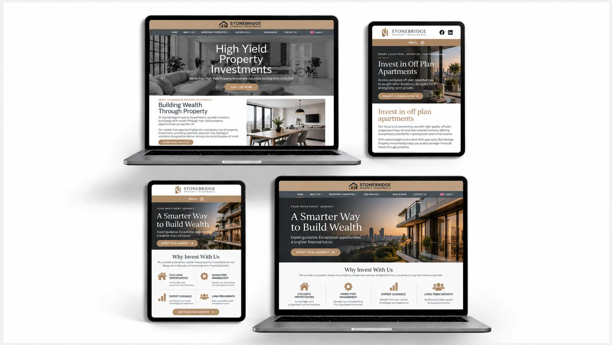
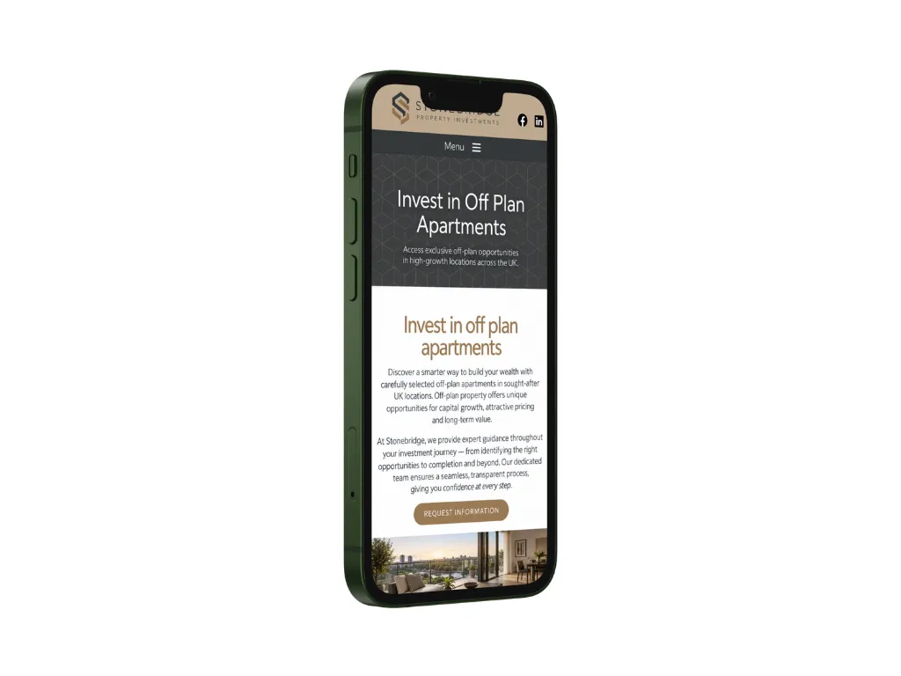
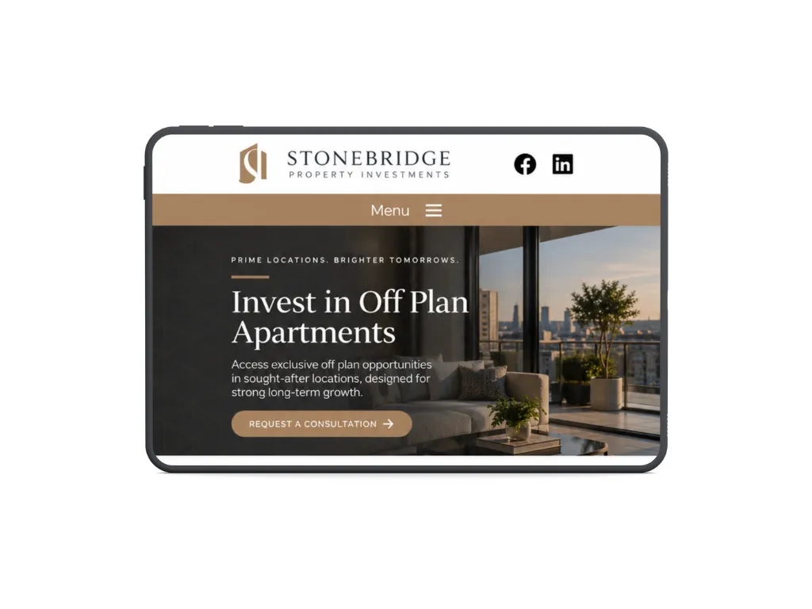
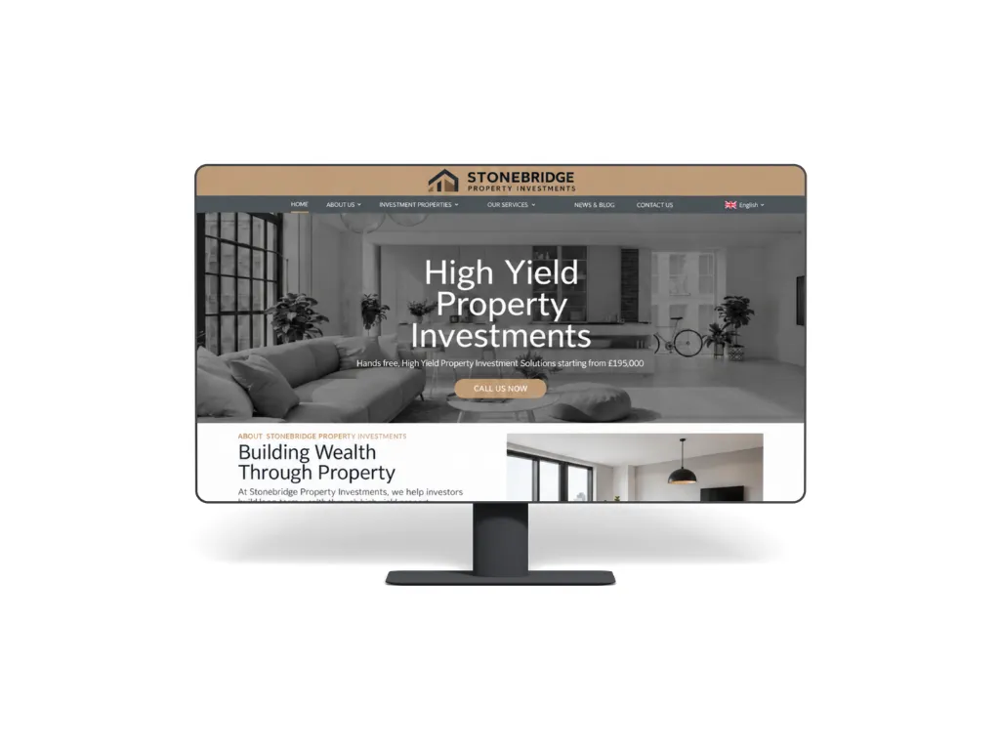

Restructuring website content for a property business
How I helped:

Project overview
- Project focus
- Content structure and navigation
- Starting point
- Useful information spread across too many pages
- Main audience
- Homeowners, landlords and property investors
- Main objective
- Help visitors reach the right service more quickly
- Delivery
- Content review, restructuring and CMS updates
Bringing a complex range of property services into a clearer structure
The business offered several related property services, but the website had become difficult to follow as new pages were added over time. Similar information appeared in different places, service boundaries were not always obvious and visitors had to work through too much content before finding what was relevant to them.
The project focused on reorganising the existing content rather than replacing the whole website, giving each service a clearer place and making the overall site easier to navigate.
The brief
Review the existing pages, group related services more logically and restructure the content so homeowners, landlords and investors could quickly find the information most relevant to their needs.
Scope


Creating clearer routes through the website
The first step was to map the existing content and identify where pages overlapped, repeated the same information or competed with one another. This made it possible to simplify the structure without losing useful material.
I grouped related services into clearer sections and reorganised individual pages so visitors could understand who each service was for, what it covered and where to go next. Internal links were also improved so people could move naturally between related property services instead of returning to the main navigation each time.
The updated structure was then applied through the existing CMS, with headings, page introductions and calls to action adjusted to keep the experience consistent throughout the site.
Key improvements

Start a similar project
If your website has grown over time and the content is becoming difficult to manage or navigate, I can help reorganise it into a clearer structure.
Tell me about your project